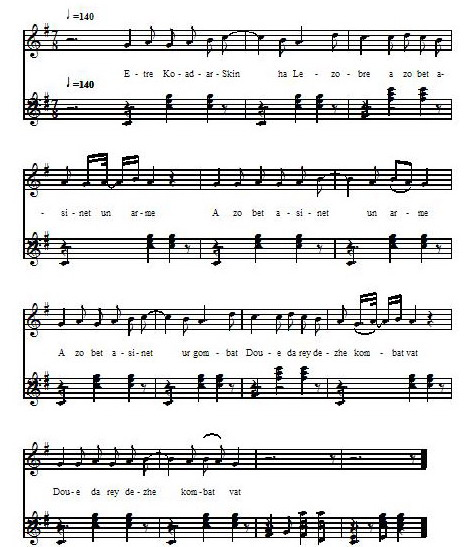

Lezobre -Version 3 - Mélodie 4
Texte recueilli en 1863 auprès du "Petit Tailleur", bourg de PlouaretPublié par François-Marie Luzel dans "Gwerzioù Breizh-Izel" en 1868

Mélodie
Air publié dans "Chants et Danses de Bretagne" par Narcisse Quélien en 1889
Arrangement Christian Souchon (c) 2008
Source: le site de M.Quentel, "Son ha ton" (voir "Liens")
Sur ce site, on trouve une remarque à propos de cette curieuse mélodie, formulée par Narcisse Quélien:
« L'air de Lézobré peut passer pour rebelle à une mesure rigoureuse ; c'est un récitatif plutôt qu'une mélodie ;
le chanteur accélère ou ralentit la narration, psalmodie des événements à son gré, suivant sa propre émotion.
Il faudrait tout autre chose que du talent pour soumettre de telles mélodies à une harmonisation. »
(On me pardonnera d'avoir quand même essayé! :)
LEZOBRE I Etre Koat-ar-Skinn ha Lezobre A zo bet assinet un arme; (bis) A zo bet assinet ur gombat, Doue da reï d'ez-he kombat-vad; (bis) Doue da reï d'ez-he kombat-vad, Hag er ger, d'ho zud, kezelou-mad !... Ann aotro Lezobre a lavare D'he bajik-bihan, un dez a oe: -Dibr din-me prim ma inkane-gwenn, Laka he vrid arc'hant en he benn; Laka he vrid arc'hant en he benn, Hag he gollier-aour en he gerc'henn; Hag ho hini Rouan akipet, Ma iefomp d'Santes-Anna Wened !- II Ann aotro Lezobre a lavare, En Zantes-Anna pa arrue: -Bars en tric'houec'h stournad ez on bet, Hag ho zric'houec'h am euz gonezet; Hag ho zric'houec'h am euz gonezet, Dre ho kraz, santes Anna Wened; Roit d'in 'r c'hraz da c'honit 'nn naontekvet, Me a vo kurunet en Drindet. Ha me breno d'ac'h ur c'houriz koar, A reïo ann dro d'ho holl douar, Unan d'no iliz ha d'ho pered Ha da ho holl douar benniget; Me a breno d'ac'h ur baniel ru, Hag a vo alaouret en daou-du. - III `Nn aotro Koat-ar-Skinn a lavare D'he bajik-bihan hag en de-se: -Me a well o tonet un azenn, Hag hen war gein un inkane-gwenn ~ - 'Nn aotro Lezobre a lavaraz Na da Goat-ar-Skinn, 'vel m'hen klewaz: -Ha mar d'on-me azenn, a dra-sur, Me na on ket azenn dre natur; Me na on ket azenn dre natur, Ma zad a lareur oa un den fur; Mar na t'euz anavezet ma zad, Me a roïo did anaout he vab! - Da gombati neuze int bet et, 'Nn aotro Lezobre 'n euz gonezet. 'Nn aotro Koat-ar-Skinn a lavare Na da Lezobre, pa c'honeze: - En hano da Zoue, Lezobre, En han' Doue, ro kartier d'in-me! - - Me na roïnn ket kartier dide, Rag n'as bije ket roët d'in-me.- -En hano ma Doue, Lezobre, Na leusk-te ganin-me ma buhe! - -Na leuskinn ket ganid da vuhe, N'as bijes ket leusket ganin-me. - -En hano da Zoue, Lezobre, Kerz-te en karg wit ma bugale.- -N'inn ket en karg wit da vugale, Me leusko gant-he ho liberte. - Na oa ket he c'hir peurlavaret, Koat-ar-Skinn gant-han a zo lazet.- IV Lizerou d'ar roue ' zo kasset. Da laret 'oa Koat-ar-Skinn lazet. Hag ar roue Gall a lavare D'he bajik bihan, un dez a oe. - O pajik, pajik, ma faj-bihan, Te a zo dilijant ha buhan, Kerz da lavaret da Lezobre Dont d' gombati ma Maurian-me!...- Ar pajik-bihan a lavare En Lannuon na pa arrue: -Demad d'ac'h ha joa holl er ger-ma, 'Nn aotro Lezobre pelec'h ema ?- 'Nn aotro Lezobre, p'hen euz klewet, He benn er prennestr 'n euz boutet; He benn er prennestr 'n euz boutet, Ha paj ar roue 'n euz saladet. -Demad d'ac'h-c'hui, aotro Lezobre ! - -Ha d'ac'h-c'hui iue, paj ar roue! Ha d'ac'h-chui iwe, paj ar roue, Petra 'zo c'hoarvezet a newe? -Lavaret 'zo d'ac'h-c'hui, Lezobre, Dont d' gombati Maurian ar roue. - -En han' Doue! pajik ar roue, Desk-d'in sekret ar Maurian-ze! Ha me a roïo did ur bouket, A vo en he greiz pewar-mill skoed. - -Me a lavaro d'ac'h he sekre' Met bikenn da den n'hen diskuilfet: Na pa gomanso ar gombat-ze, Taolet prim ho tillad war he re; Ha strinket gant-han dour-binniget, Kerkent evel hen do dic'houinet; Neuze a raïo ul lamm en er; Lakit ho kleze d'hen digommer; Bezit gwell ganec'h koll ho kleze, Lezobre, ewit koll ho puhe! - 'Nn aotro Lezobre, p'hen euz klewet, He zorn en he c'hodel 'n euz boutet; He vouked d'ezhan hen euz roët, A oa en he greiz pewar mill-skoed. - V 'Nn aotro Lezobre a lavare, En Santes-Anna, pa arrue: -Bars en naontek stourmad ez on bet, Hag ho naontek am euz gonezet; Hag ho naontek am euz gonezet, Dre ho kraz, santes Anna Vened; Grit d'in c'hoas gonit ann ugenvet, Ha me vo kurunet er Ieodet. Me a breno d'ac'h ur baniel gwenn, A vo seiz kloc'h arc'hant euz pep-penn; A vo seiz kloc'h arc'hant euz pep-penn, Hag ur c'har-balenn d'hi dougenn; Me a breno d'ac'h ewit presant Ur c'haleï aour hag ur zakramant, Hag a vezo kaer d'ho enori, Rag ur burzud-kaer ho po gret d'in. - VI 'Nn aotro Lezobre a lavare, En palez ar roue, p'arrue: -Demad d'ac'h, sir, ha memeuz roue, Na petra oc'h euz-c'hui a newe?- -Lavaret ' zo dide, Lezobre, Dont d' gombati ma Maurian-me; Koat-ar-Skinn a t'euz-te lazet, Oa unan ma brasa mignoned; Met Koat-ar-Skinn mar t'euz-te lazet, Ma Maurian-me na lazi ket. P'antreaz er zal-vraz war-'nn-ezhan, O teurrel dour-binniget gant-han. Pa daol 'r Maurian he dillad d'ann douar, A taol Lezobre he re war-var; Pa ra 'r Maurian ul lamm en er, E lak' he gleze d'hen digommer. - En hano ma Doue, Lezobre, Na chach-te da gleze ganide ! - -Na chachinn ket ganin ma c'hleze, N'as bijes ket chachet d'hini, te. - -En hano ma Doue, Lezobre, Na leusk-te ganin-me ma buhe! - -Na leuskinn ket ganid da vuhe, N'as bijes ket leusket ganin-me ! - Na oa ket he c'hir peurlavaret, Ar Maurian duz a zo lazet; Ar Maurian duz a zo lazet, Hag al Lezobre 'zo sortiet. Pajik ar roue hen euz kavet, Un eil bouket d'ez-han 'n euz roët; Un eil bouket d'ez-han 'n euz roet, A oa en he greiz pevar-mill skoed. Ar roue neuze a lavare Na da Lezobre, pa sortie: -Na aotro Doue a posubl ve, As pe lazet ma Maurian-me ! - -Ia, ho Maurian 'm euz lazet, Ha c'hui lazfenn iwe, mar karet ! - -En hano da Doue, Lezobre, Na leusk-te ganin-me ma buhe, Ha chomm bars ma falez ganin-me, Me as groaïo roue ma goude ! - -Na chomminn ket ganec'h 'n ho palez, Rag ma mammik paour 'zo intanves; Rag ma mammik paour 'zo intanves, Ha defe ouzin-me dienès. - VII 'Nn aotro Lezobre a lavare, En ker Lannnon, pa arrue: -Bars en ugent kombat ez on bet. Hag ho ugent am euz gonezet, Dre ho kraz, santes Anna Wened, Me a vo kurunet er Ieodet; Me a vo kurunet en Sant-Louis, N'am euz ket c'hoas ugent bloaz fournis ! - |
RAPPROCHEMENT AVEC BARZHAZ 71. Etre Lorgnez ha marc'heg Lez-Breizh A zo bet tonket un emgann reizh 72.Doue da ray gounid d'ar Breizhad Ha d'ar re zo er gêr keloù mat ! 73.An aotrou Lez-Breiz a lavare D'e floc'hig yaounak, un deiz a oe : 74."Dihun, va floc'h, ha sav alese Ha kae da spuran din va c'hleze 85.Santez Anna 'r vor pa erruas Tre 'barzh he iliz eñ a yeas 87.Ne oan ket ugent vloaz achuet Hag e ugent stourmad e oan bet 88.Hag o holl hon eus o gounezet Dre ho kennerzh, itron benniget 89.Mard an me c'hoazh war va c'hiz d'ar vro Mamm Santez Anna, me ho kopro 90.Me a royo deoc'h ur gouriz koar A ray teir zro en-dro d'ho moger 91.Ha teir d'hoc'h iliz, teir d'ho pered Ha teir d'ho touar, pa vin degoue'et 92.Hag ur banniel voulouz-satin-gwenn Un troad olifant flour d'he dougen 73.An aotrou Lez-Breiz a lavare D'e floc'hig yaounak, un deiz a oe : 97.Ha ! dindanañ ur azenig gwenn Ur c'habestrig kanab en e benn 133.Roue ar C'hallaoued lavare Da aotrounez e lez, ur mare : 141."Morian ar roue a zo deuet Ha ho tichekañ en deveus graet 141."Morian ar roue a zo deuet Ha ho tichekañ en deveus graet 143.Aotrou kaezh, na ouzoc'h ket eta ? Dre ardoù an diaoul c'hoari a ra 154.Taolet ket ho mantell d'an douar Hogen laket anezhi war var 85.Santez Anna 'r vor pa erruas Tre 'barzh he iliz eñ a yeas 87.Ne oan ket ugent vloaz achuet Hag e ugent stourmad e oan bet 88.Hag o holl hon eus o gounezet Dre ho kennerzh, itron benniget 89.Mard an me c'hoazh war va c'hiz d'ar vro Mamm Santez Anna, me ho kopro 92.Hag ur banniel voulouz-satin-gwenn Un troad olifant flour d'he dougen 93.Hag seizh kloc'h arc'hant a roin ouzhpenn A gano ge, noz-deiz, war ho penn 94.Ha teir gwech ez in war va daoulin Da gerc'hat dour evit ho pinsin 95.- Kae d'an emgann, kae, marc'heg Lez-Breizh Mont a ran-me ganeout-te ivez" 154.Taolet ket ho mantell d'an douar Hogen laket anezhi war var 157.Ha neuze pa lammo foll ha taer C'hwi lakay ho koaf d'hen degemer 87.Ne oan ket ugent vloaz achuet Hag e ugent stourmad e oan bet 88.Hag o holl hon eus o gounezet Dre ho kennerzh, itron benniget 87.Ne oan ket ugent vloaz achuet Hag e ugent stourmad e oan bet |
TRADUCTION LES AUBRAYS I Entre Koat-ar-Skin et Les Aubrays A été arrêtée une armée (une rencontre) ; A été arrêté un combat; Que Dieu leur donne bon combat! Que Dieu leur donne bon combat, Et à leurs parents, à la maison, bonne nouvelle! Le seigneur Les Aubrays disait, Un jour, à son petit page : - Selle-moi, vite, ma haquenée blanche, Et mets-lui sa bride d'argent en tête; Mets-lui sa bride d'argent en tête, Et son collier d'or au cou; Apprête aussi ton cheval Rouen (2) Pour que nous allions à Sainte-Anne de Vannes. II Le seigneur Les Aubrays disait, En arrivant à Sainte-Anne : - J'ai assisté à dix-huit combats, Et j'ai gagné les dix-huit; Et j'ai gagné les dix-huit, Grâces à vous, sainte Anne de Vannes; Faites-moi gagner le dix-nenvième, Et je serai couronné dans la Trinité. (3) Et je vous achèterai une ceinture de cire, Qui fera le tour de toutes vos terres; Fera le tour de votre église et du cimetière, Et de toute votre terre bénite; Je vous achèterai une bannière rouge, Qui sera dorée des deux côtés. III Le seigneur de Koat-ar-Skin disait, Ce jour là, à son petit page : - Je vois venir un âne, Monté sur une haquenée blanche ! - - Le seigneur Les Aubrays dit A Koat-ar-Skin, sitôt qu'il l'entendit: - Si je suis un âne, bien certainement, Je ne suis pas âne de nature; Je ne suis pas âne de nature, Mon père était, dit-on, un homme sage; Si tu n'as pas connu mon père, Moi, je te ferai connaître son fils ! - Alors ils sont allés combattre, Et le seigneur Les Aubrays a gagné. Le seigneur de Koat-ar-Skin disait A Les Aubrays, voyant qu'il gagnait : - Au nom de Dieu, Les Aubrays, Au nom de Dieu, donne-moi quartier ! - - Je ne te donnerai pas de quartier, Car toi, tu ne m'en aurais pas donné. - Au nom de Dieu, Les Aubrays, Laisse-moi la vie! - - Je ne te laisserai pas la vie, Car toi, tu ne m'aurais pas laissé la mienne. - - Au nom de Dieu, Les Aubrays, Charge-toi de mes enfants. - - Je ne me chargerai pas de tes enfants, Mais je les laisserai aller en liberté! - A peine eut-il dit ces mots, Que Koat-ar-Skin fut tué par lui. IV Des lettres furent envoyées au roi, Pour lui annoncer que Koat-ar-Skin avait été tué. Et le roi de France disait, Un jour, à son petit page : - Page, page, mon petit page, Toi qui es diligent et alerte, Va-t-en dire à Les Aubrays De venir combattre contre mon More ..... Et le petit page disait, En arrivant à Lannion : - Bonjour et joie à tous dans cette ville, Où est le Seigneur Les Aubrays? - Le seigneur Les Aubrays, en entendant cela, A mis la tête à la fenêtre; Il a mis la tête à la fenêtre, Et a salué le page du roi. - Bonjour à vous, seigneur Les Aubrays ! - - Et à vous aussi, page du roi! Et à vous aussi, page du roi, Qu'est-il arrivé de nouveau? - - Il vous est ordonné, Les Aubrays. De venir combattre contre le More du roi. - - Au nom de Dieu, page du roi, Apprends-moi le secret de ce More-là. Et je te donnerai un bouquet, Au milieu duquel il y aura quatre mille écus. - - Je vous dirai bien son secret, Mais vous n'en parlerez jamais à personne : Quand commencera ce combat, Jetez vite vos habits sur les siens; Et lancez-lui de l'eau bénite, Aussitôt qu'il aura dégaîné : Alors il fera un bond en l'air: Mettez votre épée pour le recevoir : Aimez mieux perdre votre épée, Les Aubrays, que perdre votre vie! - Le seigneur Les Aubrays, ayant entendu, A mis la main dans sa poche; Il lui a donné son bouquet, Avec quatre mille écus au milieu. V Le seigneur Les Aubrays disait, En arrivant à Sainte-Anne : - J'ai pris part à dix-neuf combats, Et j'ai gagné les dix-neuf; Et j'ai gagné les dix-neuf, Grâces à vous, sainte Anne de Vannes; Faites-moi encore gagner le vingtième, Et je serai couronné au Guéodet. Je vous achèterai une bannière blanche, Qui aura sept clochettes à chaque extrémité; Avec sept clochettes d'argent à chaque extrémité, Et une tige de baleine, pour la porter; Je vous achèterai en présent Un calice d'or et un sacrement (ostensoir), Et qui sera beau pour vous faire honneur, Car vous aurez fait un grand miracle en ma faveur.- VI Le seigneur Les Aubrays disait, En arrivant dans le palais du roi : - Bonjour à vous, sire, et même roi, Qu'avez-vous de nouveau ? - - Il t'a été ordonné, Les Aubrays, De venir combattre contre mon More; Tu as tué Koat-ar-Skin, Qui était un de mes plus grands amis; Mais si tu as tué Koat-ar-Skin, Tu ne tueras pas mon More. - Quand il entra sur lui dans la grande salle, Il lui lança de l'eau bénite. Quand le More jette ses habits à terre, Les Aubrays jette les siens dessus; Quand le More fait un bond en l'air, Il présente son épée, pour le recevoir. - Au nom de mon Dieu, Les Aubrays, Retire ton épée! - - Je ne retirerai pas mon épée, Car toi, tu n'aurais pas retiré la tienne. - - Au nom de mon Dieu, Les Aubrays, Laisse-moi la vie! - - Je ne te laisserai pas la vie, Car toi, tu ne m'aurais pas laissé la mienne ! - Il n'avait pas fini de parler, Que le More noir a été tué, Le More noir a été tué, Et Les Aubrays est sorti. Il a rencontré le petit page du roi, Et lui a donné un second bouquet; Il lui a donné un second bouquet, Avec quatre mille écus au milieu. Le roi disait alors à Les Aubrays, Au moment où il sortait : - Mon Dieu, serait-il possible Que tu as tué mon More? - - Oui, j'ai tué votre More, Et je vous tuerai aussi, si vous voulez! - - Au nom de Dieu, Les Aubrays, Laisse-moi la vie, Et reste avec moi dans mon palais, Je te ferai roi après moi ! -- - Je ne resterai pas avec vous dans votre palais, Car ma pauvre mère est veuve; Car ma pauvre mère est veuve, Et cela lui ferait de la peine! - VII Le seigneur Les Aubrays disait, En arrivant dans la ville de Lannion : - J'ai pris part à vingt combats, Et je les ai tous gagnés, Grâces à vous, sainte Anne de Vannes, Je serai couronné au Guéodet ; Je serai couronné à Saint-Louis, Et je n'ai pas encore vingt ans accomplis! - Notes de Luzel (1) J'ignore si cette expression signifie un cheval normand, du pays de Rouen; mais je sais qu'on désigne aussi par ces mots, eu parlant de chevaux, une nuance particulière, d'un bai tirant sur le jaune. (Luzel semble ne pas connaître le mot "rouan" qui désigne ce type de robe de cheval) (2) Ne serait-ce pas plutôt au Guéodet, comme il est dit plus loin? Les trois versions que je donne de Lezobre correspondent au poème de Lez-Breiz du Barzaz-Breiz, un des plus importants de ce recueil et par son étendue (de la page 79 à 111) et par la haute antiquité que M. de La Villemarqué lui attribue. M. Pol de Courcy est loin de partager l'opinion du savant auteur du Barzaz-Breiz, relativement à l'antiquité et à l'attribution. Voici comme il s'exprime à ce sujet, dans son excellent itinéraire De Rennes à Brest et à Saint-Malo (collection des Guides Joanne, Hachette, éditeur, pages 201 à 203): (le texte de Pol de Courcy est reproduit dans les commentaires de Lez-Breizh) |

Les Aubrays -Version 1 - Mélodie 1
Les Aubrays -Version 2 - Mélodie 2
Les Aubrays -Version 3 - Mélodie 3
Les Aubrays -Version 4 - Mélodie 2
Les Aubrays -Version 5 - Mélodie 4
Les Aubrays -Versions Pengwern
Retour à "Lez-Breizh" du Bazhaz Breizh